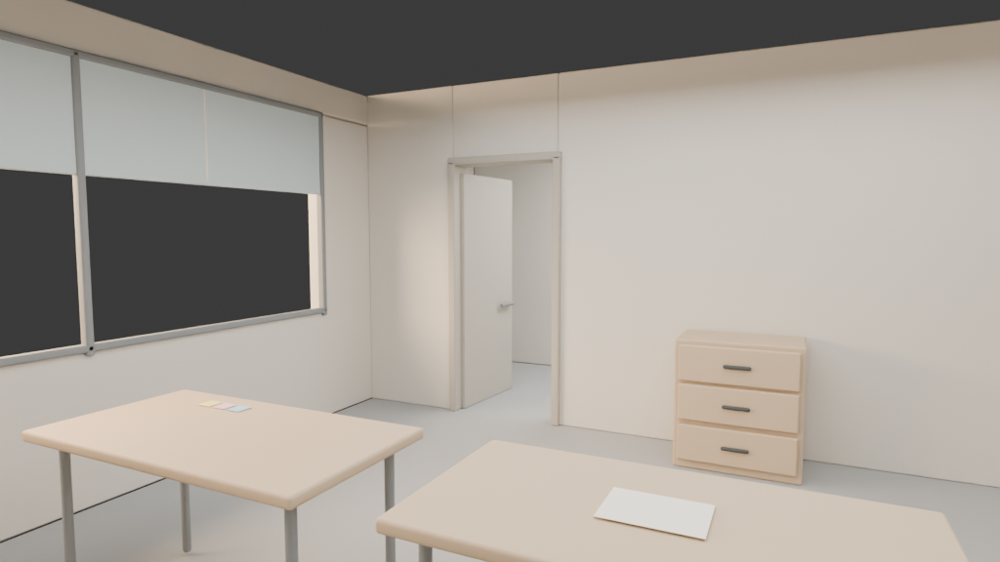

固定三维场景 → 深度图 → 本地 VACE
本地试验完成 · 布局与生成内容待用户确认
四个机位来自同一份 Blender 场景。下面可切换两个透视机位，对照原始三维渲染和独立生成的图片。生成器仍改变了门、椅子和柜子细节；接口成功没有替代空间和审美验收。

固定几何渲染 · 原始布局 深度＋渲染参考 → VACE 生成
深度＋渲染参考 → VACE 生成约2秒本地空场景视频试验
512×288，17帧，8fps；使用固定机位的深度条件。仅核对接口成功和文件完整保存，状态 awaiting_human_review。助手未抽帧、听看、ASR或调用音画审核模型。本片人物表演尚未接入此试验。
角色与生产流程仍待处理
方澄身份候选尚未选定；林屿旧请求仍结果/计费未知，未重派。选定身份后再补脸部正面、左右45°和侧面细节参考。S7 剧本、导演安排、对白和实际表演窗口没有修改；原账本完整保留。
工具版本、实际验证与未解决问题